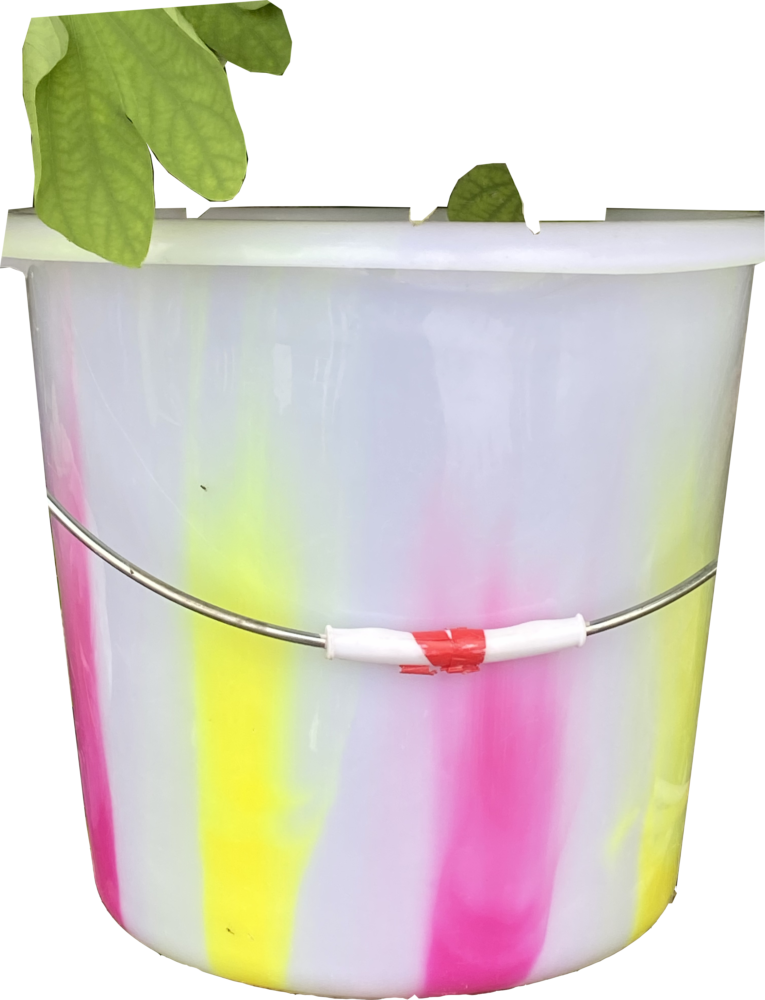
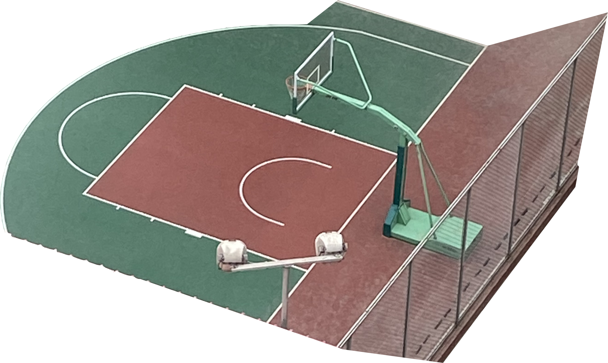
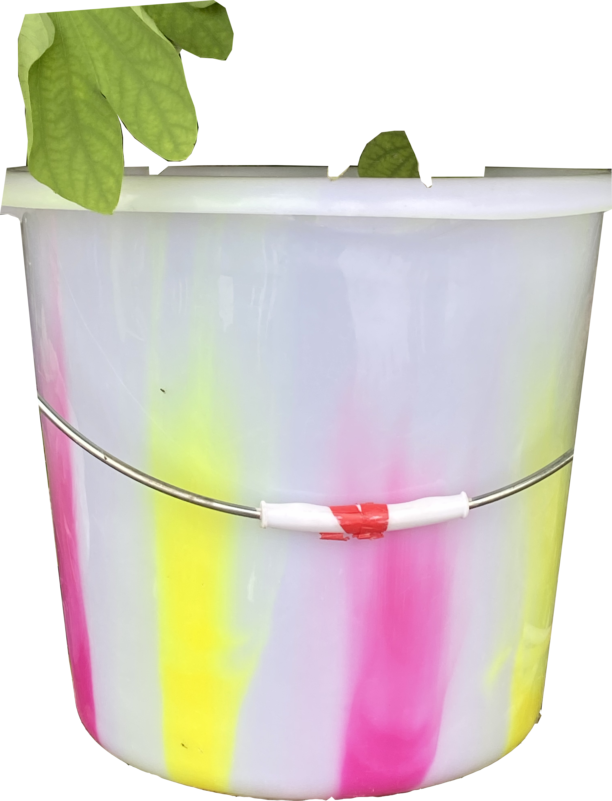
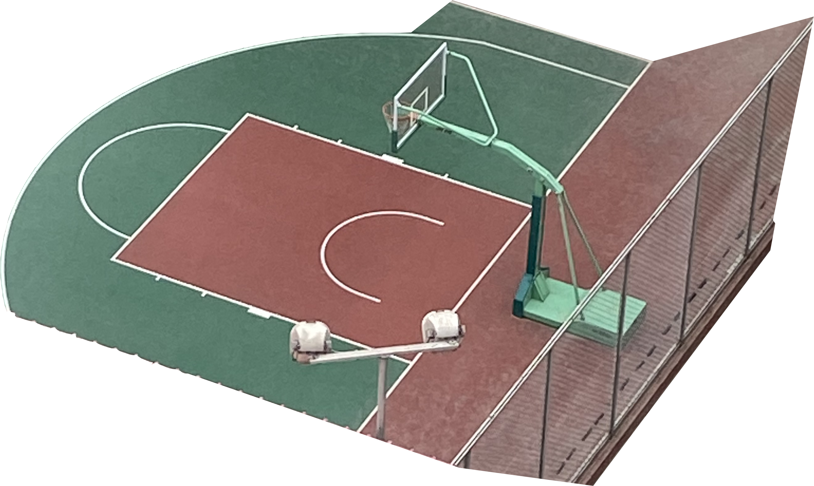
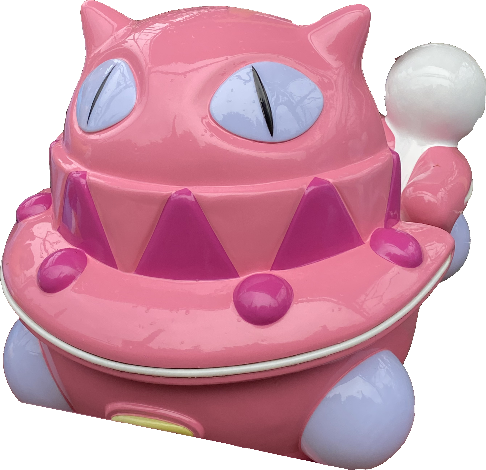
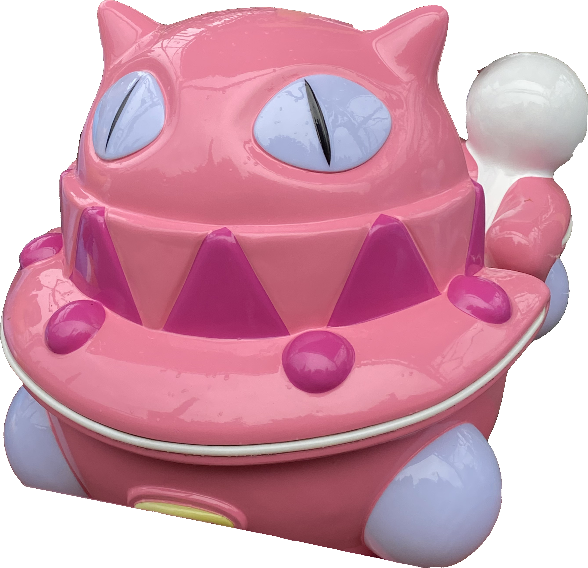

 



Let everything that's been planned come true. Let them believe. And let them have a laugh at their passions. Because what they call passion actually is not some emotional energy, but just the friction between their souls and the outside world.>
And most important, let them believe in themselves.
Let them be helpless like children, because weakness is a great thing, and strength is nothing.
When a man is just born, he is weak and flexible. When he dies, he is hard and insensitive. When a tree is growing, it's tender and pliant. But when it's dry and hard, it dies. Hardness and strength are death's companions. Pliancy and weakness are expressions of the freshness of being. Because what has hardened will never win.>
Let them be helpless like children, because weakness is a great thing, and strength is nothing.
When a man is just born, he is weak and flexible. When he dies, he is hard and insensitive. When a tree is growing, it's tender and pliant. But when it's dry and hard, it dies. Hardness and strength are death's companions. Pliancy and weakness are expressions of the freshness of being. Because what has hardened will never win.>